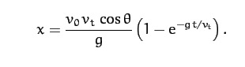
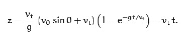

This mod is an improvement of Arrow Trajectory. It automatically turns on or off depending on if you're holding a projectile, changes the trajectory depending on which projectile you're using, shows the trajectory as a line ending in a target, and uses the proper projectile motion equations:
 
z: The displacement in the vertical direction. In Minecraft, this is actually the y-direction. (m)
x: The displacement in the x-direction (this is then rotated into Minecraft's z-direction depending on the
player's yaw). (m)
v0: Magnitude of the initial velocity of the projectile. (m/s)
vt: Magnitude of the terminal (different from final) velocity of the projectile, representing the strength of
air resistance. (m/s)
θ: The player's pitch.
g: The acceleration due to gravity. (m/s²)
t: The current time (s).
The values for these equations were determined partly by trial and error, and partly experimentally, by recording a projectile's position vs. time data in a file and graphing the motion. In case you're curious, you can download those graphs by clicking here.
However, arrows have a small amount of unpredictable randomness.